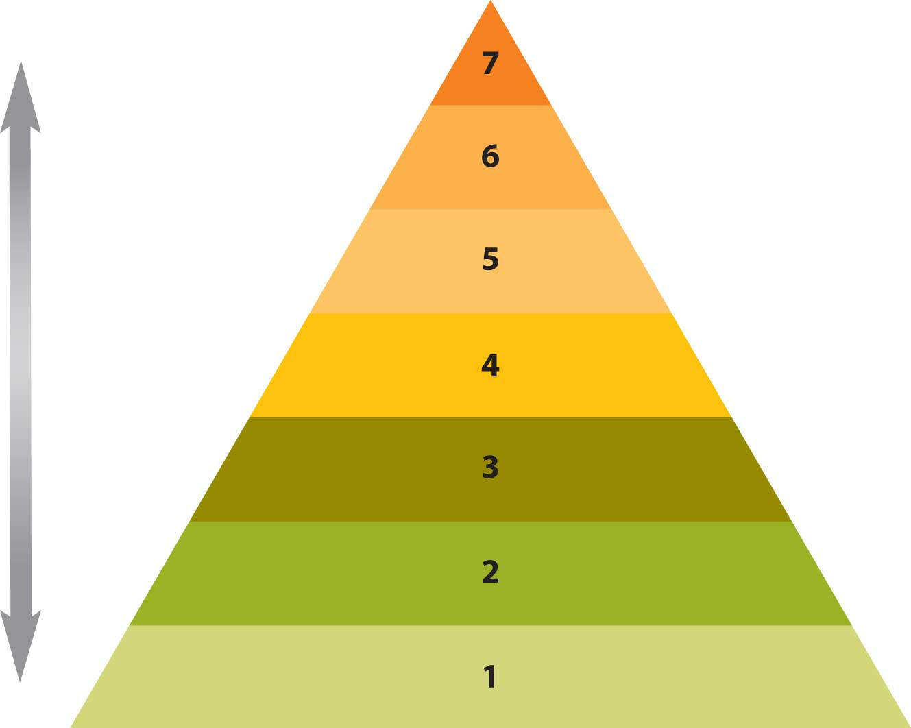

Identity is the essential core of who we are as individuals, the conscious experience of the self inside.
Kauffman
What are you doing? This simple question is at the heart of an application that allows user to stay hyperconnected. Before we consider the social media and its implications on business communication, let’s first examine the central question Twitter asks its users to address in 140 characters or less.
What are you doing right now? Are you reading, learning, or have you already tuned out this introduction and skipped over to Twitter to see what your friends are up to? We often define ourselves through action, but the definition doesn’t work very well. When you are a newborn baby, your actions represented a small percentage of your potential—now that you’re older, you are more than an eating machine that requires constant care and feeding—but what are you? A common response may be “human,” but even that can be challenging to define. If we say humans are the tool makers and then note that several nonhuman species from primates to otters make and use tools, where does that leave us? You could say that a human has two arms, two legs, or two eyes, but not everyone has these, so the definition fails yet again. You may want to say that you can communicate, but we don’t all speak the same language, and communication is a universal process across species. You may be tempted to respond to the question “what are you?” by saying something along the lines of “I think, therefore I am”—but what is thinking, and are humans the only species with the ability to think? Again, defining yourself through your ability to think may not completely work. Finally, you may want to raise the possibility of your ability to reason and act, recall the past, be conscious of the present, and imagine the future; or your ability to contemplate the abstract, the ironic, even the absurd. Now we might be getting somewhere.
What does the word “party” mean to you? Most cultures have rituals where people come together in a common space for conversation and sharing. Such gatherings often include food, music, and dancing. In our modern society, we increasingly lack time to connect with others. It may be too expensive or time-consuming to travel across the country for Thanksgiving, but we may meet on Skype and talk (audio/video) at relatively little or no cost. Some of your instructors may have traveled to a designated location for a professional conference each year, seeing colleagues and networking; but in recent years time, cost, and competition for attention has shifted priorities for many. We may have two (or three or four) jobs that consume much of our time, but you’ll notice that in the breaks and pauses of life people reach for their cell phones to connect. We instant message (IM), text message, tweet, e-mail, and interact. As humans, we have an innate need to connect with each other, even when that connection can (and does) sometimes produce conflict.
When we ask the question, “What are you doing?” the answer invariably involves communication; communication with self, with others, in verbal (oral and written) and nonverbal ways. How do we come to this and how does it influence our experience within the business environment? How do we come to enter a new community through a rite of initiation, often called a job interview, only to find ourselves lost as everyone speaks a new language, the language of the workplace? How do we negotiate relationships, demands for space and time, across meetings, collaborative efforts, and solo projects? This chapter addresses several of these issues as we attempt to answer the question, “What are you doing?” with the answer: communicating.
When you answer the question, “What are you doing?” what do you write? Eating at your favorite restaurant? Working on a slow evening? Reading your favorite book on a Kindle? Preferring the feel of paper to keyboard? Reading by candlelight? In each case you are communicating what you are doing, but you may not be communicating why, or what it means to you. That communication may be internal, but is it only an internal communication process?
Intrapersonal communicationCommunication with yourself. can be defined as communication with one’s self, and that may include self-talk, acts of imagination and visualization, and even recall and memory.McLean, S. (2005). The basics of interpersonal communication. Boston, MA: Allyn & Bacon. You read on your cell phone screen that your friends are going to have dinner at your favorite restaurant. What comes to mind? Sights, sounds, and scents? Something special that happened the last time you were there? Do you contemplate joining them? Do you start to work out a plan of getting from your present location to the restaurant? Do you send your friends a text asking if they want company? Until the moment when you hit the “send” button, you are communicating with yourself.
Communications expert Leonard Shedletsky examines intrapersonal communication through the eight basic components of the communication process (i.e., source, receiver, message, channel, feedback, environment, context, and interference) as transactional, but all the interaction occurs within the individual.Shedletsky, L. J. (1989). Meaning and mind: An interpersonal approach to human communication. ERIC Clearinghouse on reading and communication skills. Bloomington, IN: ERIC. Perhaps, as you consider whether to leave your present location and join your friends at the restaurant, you are aware of all the work that sits in front of you. You may hear the voice of your boss, or perhaps of one of your parents, admonishing you about personal responsibility and duty. On the other hand, you may imagine the friends at the restaurant saying something to the effect of “you deserve some time off!”
At the same time as you argue with yourself, Judy Pearson and Paul Nelson would be quick to add that intrapersonal communication is not only your internal monologue but also involves your efforts to plan how to get to the restaurant.Pearson, J., & Nelson, P. (1985). Understanding and sharing: An introduction to speech communication (3rd ed.). Dubuque, IA: William C. Brown. From planning to problem solving, internal conflict resolution, and evaluations and judgments of self and others, we communicate with ourselves through intrapersonal communication.
All this interaction takes place in the mind without externalization, and all of it relies on previous interaction with the external world. If you had been born in a different country, to different parents, what language would you speak? What language would you think in? What would you value, what would be important to you, and what would not? Even as you argue to yourself whether the prospect of joining your friends at the restaurant overcomes your need to complete your work, you use language and symbols that were communicated to you. Your language and culture have given you the means to rationalize, act, and answer the question, “What are you doing?” but you are still bound by the expectations of yourself and the others who make up your community.
In intrapersonal communication, we communicate with ourselves.
Again we’ll return to the question “what are you doing?” as one way to approach self-concept. If we define ourselves through our actions, what might those actions be, and are we no longer ourselves when we no longer engage in those activities? Psychologist Steven Pinker defines the conscious present as about three seconds for most people. Everything else is past or future.Pinker, S. (2009). The stuff of thought: Language as a window to human nature. New York, NY: Penguin Books. Who are you at this moment in time, and will the self you become an hour from now be different from the self that is reading this sentence right now?
Just as the communication process is dynamic, not static (i.e., always changing, not staying the same), you too are a dynamic system. Physiologically your body is in a constant state of change as you inhale and exhale air, digest food, and cleanse waste from each cell. Psychologically you are constantly in a state of change as well. Some aspects of your personality and character will be constant, while others will shift and adapt to your environment and context. That complex combination contributes to the self you call you. We may choose to define selfOne’s own sense of individuality, personal characteristics, motivations, and actions. as one’s own sense of individuality, personal characteristics, motivations, and actions,McLean, S. (2005). The basics of interpersonal communication. Boston, MA: Allyn & Bacon. but any definition we create will fail to capture who you are, and who you will become.
Our self-conceptWhat we perceive ourselves to be. is “what we perceive ourselves to be,”McLean, S. (2005). The basics of interpersonal communication (p. 97). Boston, MA: Allyn & Bacon. and involves aspects of image and esteem. How we see ourselves and how we feel about ourselves influences how we communicate with others. What you are thinking now and how you communicate impacts and influences how others treat you. Charles CooleyCooley, C. (1922). Human nature and the social order (Rev. ed.). New York, NY: Scribners. calls this concept the looking-glass self. We look at how others treat us, what they say and how they say it, for clues about how they view us to gain insight into our own identity. Leon Festinger added that we engage in social comparisonsEvaluating ourselves in relation to our peers of similar status, similar characteristics, or similar qualities., evaluating ourselves in relation to our peers of similar status, similar characteristics, or similar qualities.Festinger, L. (1954). A theory of soical comparison processes. Human Relationships, 7, 117–140.
The ability to think about how, what, and when we think, and why, is critical to intrapersonal communication. Animals may use language and tools, but can they reflect on their own thinking? Self-reflection is a trait that allows us to adapt and change to our context or environment, to accept or reject messages, to examine our concept of ourselves and choose to improve.
Internal monologueThe self-talk of intrapersonal communication. refers to the self-talk of intrapersonal communication. It can be a running monologue that is rational and reasonable, or disorganized and illogical. It can interfere with listening to others, impede your ability to focus, and become a barrier to effective communication. Alfred Korzybski suggested that the first step in becoming conscious of how we think and communicate with ourselves was to achieve an inner quietness, in effect “turning off” our internal monologue.Korzybski, A. (1933). Science and sanity. Lancaster, PA: International Non-Aristotelian Library Publish Co. Learning to be quiet inside can be a challenge. We can choose to listen to others when they communicate through the written or spoken word while refraining from preparing our responses before they finish their turn is essential. We can take mental note of when we jump to conclusions from only partially attending to the speaker or writer’s message. We can choose to listen to others instead of ourselves.
One principle of communication is that interaction is always dynamic and changing. That interaction can be internal, as in intrapersonal communication, but can also be external. We may communicate with one other person and engage in interpersonal communication. If we engage two or more individuals (up to eight normally), group communication is the result. More than eight normally results in subdivisions within the group and a reversion to smaller groups of three to four membersMcLean, S. (2005). The basics of interpersonal communication. Boston, MA: Allyn & Bacon. due to the ever-increasing complexity of the communication process. With each new person comes a multiplier effect on the number of possible interactions, and for many that means the need to establish limits.
Who are you? You are more than your actions, and more than your communication, and the result may be greater than the sum of the parts, but how do you know yourself? In the first of the Note 16.1 "Introductory Exercises" for this chapter, you were asked to define yourself in five words or less. Was it a challenge? Can five words capture the essence of what you consider yourself to be? Was your twenty to fifty description easier? Or was it equally challenging? Did your description focus on your characteristics, beliefs, actions, or other factors associated with you? If you compared your results with classmates or coworkers, what did you observe? For many, these exercises can prove challenging as we try to reconcile the self-concept we perceive with what we desire others to perceive about us, as we try to see ourselves through our interactions with others, and as we come to terms with the idea that we may not be aware or know everything there is to know about ourselves.
Joseph Luft and Harry IngramLuft, J., & Ingham, H. (1955). The Johari Window: A graphic model for interpersonal relations. Los Angeles: University of California Western Training Lab.,Luft, J. (1970). Group processes: An introduction to group dynamics (2nd ed.). Palo Alto, CA: National Press Group. gave considerable thought and attention to these dimensions of self, which are represented in Figure 16.1 "Luft and Ingram’s Dimensions of Self". In the first quadrant of the figure, information is known to you and others, such as your height or weight. The second quadrant represents things others observe about us that we are unaware of, like how many times we say “umm” in the space of five minutes. The third quadrant involves information that you know, but do not reveal to others. It may involve actively hiding or withholding information, or may involve social tact, such as thanking your Aunt Martha for the large purple hat she’s given you that you know you will never wear. Finally, the fourth quadrant involves information that is unknown to you and your conversational partners. For example, a childhood experience that has been long forgotten or repressed may still motivate you. As another example, how will you handle an emergency after you’ve received first aid training? No one knows because it has not happened.
Figure 16.1 Luft and Ingram’s Dimensions of Self

These dimensions of self serve to remind us that we are not fixed—that freedom to change combined with the ability to reflect, anticipate, plan, and predict allows us to improve, learn, and adapt to our surroundings. By recognizing that we are not fixed in our concept of “self,” we come to terms with the responsibility and freedom inherent in our potential humanity.
In the context of business communication, the self plays a central role. How do you describe yourself? Do your career path, job responsibilities, goals, and aspirations align with what you recognize to be your talents? How you represent “self,” through your résumé, in your writing, in your articulation and presentation—these all play an important role as you negotiate the relationships and climate present in any organization.
Self-concept involves multiple dimensions and is expressed in internal monologue and social comparisons.
You may have had no problem answering the question, “What are you doing?” and simply pulled a couple of lines from yesterday’s Twitter message or reviewed your BlackBerry calendar. But if you had to compose an entirely original answer, would it prove to be a challenge? Perhaps at first this might appear to be a simple task. You have to work and your job required your participation in a meeting, or you care about someone and met him or her for lunch.
Both scenarios make sense on the surface, but we have to consider the why with more depth. Why that meeting, and why that partner? Why not another job, or a lunch date with someone else? If we consider the question long enough, we’ll come around to the conclusion that we communicate with others in order to meet basic needs, and our meetings, interactions, and relationships help us meet those needs. We may also recognize that not all our needs are met by any one person, job, experience, or context; instead, we diversify our communication interactions in order to meet our needs. At first, you may be skeptical of the idea that we communicate to meet our basic needs, but let’s consider two theories on the subject and see how well they predict, describe, and anticipate our tendency to interact.
Abraham Maslow’s hierarchy of needs, represented in Figure 16.2 "Maslow’s Hierarchy of Needs", may be familiar to you.Maslow, A. (1970). Motivation and personality (2nd ed.). New York, NY: Harper & Row. Perhaps you saw it in negotiation or international business classes and came to recognize its universal applicability. We need the resources listed in level one (i.e., air, food, and water) to survive. If we have met those basic needs, we move to level two: safety. We want to make sure we are safe and that our access to air, food, and water is secure. A job may represent this level of safety at its most basic level. Regardless of how much satisfaction you may receive from a job well done, a paycheck ultimately represents meeting basic needs for many. Still, for others, sacrifice is part of the job. Can you think of any professions that require individuals to make decisions where the safety of others comes first? “First responders” and others who work in public safety often place themselves at risk for the benefit of those they serve.
If we feel safe and secure, we are more likely to seek the companionship of others. Humans tend to form groups naturally, and if basic needs are met, love and belonging occur in level three. Perhaps you’ve been new at work and didn’t understand the first thing about what was really going on. It’s not that you weren’t well trained and did not receive a solid education, but rather that the business or organization is made up of groups and communities that communicate and interact in distinct and divergent ways. You may have known how to do something, but not how it was done at your new place of work. Colleagues may have viewed you as a stranger or “newbie” and may have even declined to help you. Conflict may have been part of your experience, but if you were lucky, a mentor or coworker took the first step and helped you find your way.
As you came to know what was what and who was who, you learned how to negotiate the landscape and avoid landmines. Your self-esteem (level four) improved as you perceived a sense of belonging, but still may have lacked the courage to speak up.
Over time, you may have learned your job tasks and the strategies for succeeding in your organization. Perhaps you even came to be known as a reliable coworker, one who did go the extra mile, one who did assist the “newbies” around the office. If one of them came to you with a problem, you would know how to handle it. You are now looked up to by others and by yourself within the role, with your ability to make a difference. Maslow calls this “self-actualization” (level five), and discusses how people come to perceive a sense of control or empowerment over their context and environment. Where they look back and see that they once felt at the mercy of others, particularly when they were new, they can now influence and direct aspects of the work environment that were once unavailable.
Beyond self-actualization, Maslow recognizes our innate need to know (level six) that drives us to grow and learn, explore our environment, or engage in new experiences. We come to appreciate a sense of self that extends beyond our immediate experiences, beyond the function, and into the community and the representational. We can take in beauty for its own sake, and value aesthetics (level seven) that we previously ignored or had little time to consider.
Figure 16.2 Maslow’s Hierarchy of Needs
Now that you have reached a sense of contentment in your job and can take in a museum tour, the news of a possible corporate merger is suddenly announced in the mainstream media. It may have been just gossip before, but now it is real. You may feel a sense of uncertainty and be concerned about your status as a valued employee. Do you have reason to worry about losing your job? How will you handle the responsibilities that you’ve acquired and what about the company and its obligations to those who have sacrificed over time for common success? Conflict may be more frequent in the workplace, and you may feel compelled to go over your personal budget and reprioritize your spending. You may eliminate museum visits and donations, and you may decide to start saving money as the future is less certain. You may dust off your résumé and start communicating with colleagues in related fields as you network, reaching out to regain that sense of stability, of control, that is lost as you feel your security threatened. You will move through Maslow’s hierarchy as you reevaluate what you need to survive.
This theory of interpersonal needs is individualistic, and many cultures are not centered on the individual, but it does serve to start our discussion about interpersonal needs. What do we need? Why do we communicate? The answers to both questions are often related.
William Schutz offers an alternate version of interpersonal needs. Like Maslow, he considers the universal aspects of our needs, but he outlines how they operate within a range or continuum for each person.Schutz, W. (1966). The interpersonal underworld. Palo Alto, CA: Science and Behavior Books. According to Schutz, the need for affectionRelated to the need for appreciation., or appreciation, is basic to all humans. We all need to be recognized and feel like we belong, but may have differing levels of expectations to meet that need. When part of the merger process is announced and the news of layoffs comes, those coworkers who have never been particularly outgoing and have largely kept to themselves may become even more withdrawn. Schutz describes underpersonalsPeople who seek limited interaction. as people who seek limited interaction. On the opposite end of the spectrum, you may know people where you work that are often seeking attention and affirmation. Schutz describes overpersonalsPeople who have a strong need to be liked and constantly seek attention from others. as people who have a strong need to be liked and constantly seek attention from others. The person who strikes a healthy balance is called a personal individualThe person who strikes a healthy balance in terms of human interaction..
Humans also have a need for controlThe ability to influence people and events., or the ability to influence people and events. But that need may vary by the context, environment, and sense of security. You may have already researched similar mergers, as well as the forecasts for the new organization, and come to realize that your position and your department are central to the current business model. You may have also of taken steps to prioritize your budget, assess your transferable skills, and look for opportunities beyond your current context. Schutz would describe your efforts to control your situation as autocraticSelf-directed in terms of control., or self-directed. At the same time there may be several employees who have not taken similar steps who look to you and others for leadership, in effect abdicating their responsibility. AbdicratsPeople who shift the burn of responsibility from themselves to others. shift the burn of responsibility from themselves to others, looking to others for a sense of control. DemocratsPeople who share the need for control between the individual and the group. share the need between the individual and the group, and may try to hold a departmental meeting to gather information and share.
Finally, Schutz echoes Maslow in his assertion that belonging is a basic interpersonal need, but notes that it exists within a range or continuum, where some need more and others less. UndersocialsPeople who are less likely to seek interaction, may prefer smaller groups, and will generally not be found on center stage. may be less likely to seek interaction, may prefer smaller groups, and will generally not be found on center stage. OversocialsPeople who crave the spotlight of attention and are highly motivated to seek belonging., however, crave the spotlight of attention and are highly motivated to seek belonging. A social personPerson who strikes a healthy balance between being withdrawn and being the constant center of attention. is one who strikes a healthy balance between being withdrawn and being the constant center of attention.
Schutz describes these three interpersonal needs of affection, control, and belonging as interdependent and variable. In one context, an individual may have a high need for control, while in others he or she may not perceive the same level of motivation or compulsion to meet that need. Both Maslow and Schutz offer us two related versions of interpersonal needs that begin to address the central question: why communicate?
We communicate with each other to meet our needs, regardless how we define those needs. From the time you are a newborn infant crying for food or the time you are a toddler learning to say “please” when requesting a cup of milk, to the time you are a adult learning the rituals of the job interview and the conference room, you learn to communicate in order to gain a sense of self within the group or community, meeting your basic needs as you grow and learn.
Through communication, we meet universal human needs.
How do you get to know other people? If the answer springs immediately to mind, we’re getting somewhere: communication. Communication allows us to share experiences, come to know ourselves and others, and form relationships, but it requires time and effort. You don’t get to know someone in a day, a month, or even a year. At the same time you are coming to know them, they are changing, adapting, and growing—and so are you. Irwin Altman and Dalmas Taylor describe this progression from superficial to intimate levels of communication in social penetration theory, which is often called the Onion Theory because the model looks like an onion and involves layers that are peeled away.Altman, I., & Taylor, D. (1973). Social penetration: The development of interpersonal relationships. New York, NY: St. Martin’s Press. According to social penetration theory, we fear that which we do not know. That includes people. Strangers go from being unknown to known through a series of steps that we can observe through conversational interactions.
If we didn’t have the weather to talk about, what would we say? People across cultures use a variety of signals to indicate neutral or submissive stances in relation to each other. A wave, a nod, or a spoken reference about a beautiful day can indicate an open, approachable stance rather than a guarded, defensive posture. At the outermost layer of the onion, in this model, there is only that which we can observe. We can observe characteristics about each other and make judgments, but they are educated guesses at best. Our nonverbal displays of affiliation, like a team jacket, a uniform, or a badge, may communicate something about us, but we only peel away a layer when we engage in conversation, oral or written.
As we move from public to private information we make the transition from small talk to substantial, and eventually intimate, conversations. Communication requires trust and that often takes time. Beginnings are fragile times and when expectations, roles, and ways of communicating are not clear, misunderstandings can occur. Some relationships may never proceed past observations on the weather, while others may explore controversial topics like politics or religion. A married couple that has spent countless years together may be able to finish each other’s sentences, and as memory fades, the retelling of stories may serve to bond and reinforce the relationship. Increasingly, intimate knowledge and levels of trust are achieved over time, involving frequency of interaction as well as length and quality. Positive interactions may lead to more positive interactions, while negative ones may lead to less overall interaction.
This may appear to be common sense at first, but let’s examine an example. You are new to a position and your supervisor has been in his or her role for a number of years. Some people at your same level within the organization enjoy a level of knowledge and ease of interaction with your supervisor that you lack. They may have had more time and interactions with the supervisor, but you can still use this theory to gain trust and build a healthy relationship. Recognize that you are unknown to your supervisor and vice versa. Start with superficial conversations that are neutral and nonthreatening, but demonstrate a willingness to engage in communication. Silence early in a relationship can be a sign of respect, but it can also send the message that you are fearful, shy, or lack confidence. It can be interpreted as an unwillingness to communicate, and may actually discourage interaction. If the supervisor picks up the conversation, keep your responses short and light. If not, keep an upbeat attitude and mention the weather.
Over time, the conversations may gradually grow to cross topics beyond the scope of the office, and a relationship may form that involves trust. To a degree, you and your coworkers learn to predict one another’s responses and relax in the knowledge of mutual respect. If, however, you skip from superficial to intimate topics too quickly, you run risk of violating normative expectations. Trust takes time, and with that comes empathy and understanding. But if you share with your supervisor your personal struggles on day one, it may erode your credibility. According to the social penetration theory, people go from superficial to intimate conversations as trust develops through repeated, positive interactions. Self-disclosureInformation, thoughts, or feelings we tell others about ourselves that they would not otherwise know. is “information, thoughts, or feelings we tell others about ourselves that they would not otherwise know.”McLean, S. (2005). The basics of interpersonal communication (p. 112). Boston, MA: Allyn & Bacon. Taking it step by step, and not rushing to self-disclose or asking personal questions too soon, can help develop positive business relationships.
Write down five terms that describe your personal self, and five terms that describe your professional self. Once you have completed your two lists, compare the results. They may have points that overlap, or may have words that describe you in your distinct roles that are quite different. This difference can be easy to address, but at times it can be a challenge to maintain. How much of “you” do you share in the workplace? Our personal and professional lives don’t exist independently, and in many ways are interdependent.
How do people know more about us? We communicate information about ourselves, whether or not we are aware of it. You cannot not communicate.Watzlawick, P. (1993). The language of change: Elements of therapeutic communication. New York, NY: W. W. Norton & Company. From your internal monologue and intrapersonal communication, to verbal and nonverbal communication, communication is constantly occurring. What do you communicate about yourself by the clothes (or brands) you wear, the tattoos you display, or the piercing you remove before you enter the workplace? Self-disclosure is a process by which you intentionally communicate information to others, but can involve unintentional, but revealing slips. Steven Beebe, Susan Beebe, and Mark Redmond offer us five principles of self-disclosure that remind us that communication is an integral part of any business or organizational setting. Let’s discuss them one by one.Beebe, S. [Steven], Beebe, S. [Susan], & Redmond, M. (2002). Interpersonal communication relating to others (3rd ed.). Boston, MA: Allyn & Bacon.
Would you come to work on your first day wearing a large purple hat? If you knew that office attire was primarily brown and gray suits? Most people would say, “Of course not!” as there is a normative expectation for dress, sometimes called a dress code. After you have worked within the organization, earned trust and established credibility, and earned your place in the community, the purple hat might be positively received with a sense of humor. But if you haven’t yet earned your place, your fashion statement may be poorly received. In the same way, personal information is normally reserved for those of confidence, and earned over time. Take small steps as you come to know your colleagues, taking care to make sure who you are does not speak louder than what you say.
So you decided against wearing the purple hat to work on your first day, but after a successful first week you went out with friends from your college days. You shut down the bar late in the evening and paid for it on Sunday. At work on Monday, is it a wise strategy to share the finer tips of the drinking games you played on Saturday night? Again, most people would say, “Of course not!” It has nothing to do with work, and only makes you look immature. Some people have serious substance abuse issues, and your stories could sound insensitive, producing a negative impact. How would you know, as you don’t really know your coworkers yet? In the same way, it is not a wise strategy to post photos from the weekend’s escapades on your MySpace, Facebook, or similar social networking Web page. Employers are increasingly aware of their employees’ Web pages, and the picture of you looking stupid may come to mind when your supervisor is considering you for a promotion. You represent yourself, but you also represent your company and its reputation. If you don’t represent it well, you run the risk of not representing it at all.
Monday morning brings the opportunity to tell all sorts of stories about the weekend, and since you’ve wisely decided to leave any references to the bar in the past, you may instead choose the wise conversational strategy of asking questions. You may ask your coworkers what they did, what it was like, who they met, and where they went, but eventually all conversations form a circle that comes back to you. The dance between source and receiver isn’t linear, it’s transactional. After a couple of stories, sooner or later, you’ll hear the question, “What did you do this weekend?” It’s now your turn. This aspect of conversation is universal. We expect when we reveal something about ourselves that others will reciprocate. The dyadic effectThe expectation that when we reveal something about ourselves, others will reciprocate. is the formal term for this process, and is often thought to meet the need to reduce uncertainty about conversational partners. If you stay quiet or decline to answer after everyone else has taken a turn, what will happen? They may be put off at first, they may invent stories and let their imaginations run wild, or they may reject you. It may be subtle at first, but reciprocity is expected.
You have the choice of what to reveal and when. You may choose to describe your weekend by describing the friends and conversations while omitting any reference to the bar. You may choose to focus on your Sunday afternoon gardening activities. You may just say you read a good book and mention the title of the one you are reading. Regardless of what option you choose, you have the freedom and responsibility within the dyadic effect to reciprocate, but you have a degree of control. You can learn to anticipate when your turn will come, and to give some thought to what you will say before the moment arrives.
If you decided to go with the “good book” option, or perhaps mention that you watched a movie, you just ran the risk that whatever you are reading or watching may be criticized. If the book you are enjoying is controversial, you might anticipate a bit of a debate, but if you mentioned a romance novel, or one that has a science fiction theme, you may have thought it wouldn’t generate criticism. Sometimes the most innocent reference or comment can produce conflict when the conversational partners have little prior history. At the same time, nothing ventured, nothing gained. How are you going to discover that the person you work with appreciates the same author or genre if you don’t share that information? Self-disclosure involves risk, but can produce positive results.
Before you mention the title of the book or movie you saw this weekend, you may consider your audience and what you know about them. If you’ve only known them for a week, your awareness of their habits, quirks, likes and dislikes may be limited. At the same time, if you feel safe and relatively secure, you may test the waters with a reference to the genre but not the author. You may also decide that it is just a book, and they can take it or leave it.
“Trust is the ability to place confidence in or rely on the character or truth of someone.”McLean, S. (2005). The basics of interpersonal communication (p 114). Boston, MA: Allyn & Bacon. Trust is a process, not a badge to be earned. It takes time to develop, and can be lost in a moment. Even if you don’t agree with your coworker, understand that self-revelation communicates a measure of trust and confidence. Respect that confidence, and respect yourself.
Also, consider the nature of the information. Some information communicated in confidence must see the light of day. Sexual harassment, fraud, theft, and abuse are all issues in the workplace, and if you become aware of these behaviors you will have a responsibility to report them according to your organization’s procedures. A professional understands that trust is built over time, and understands how valuable this intangible commodity can be to success.
Interpersonal communicationCommunication between two people. can be defined as communication between two people, but the definition fails to capture the essence of a relationship. This broad definition is useful when we compare it to intrapersonal communication, or communication with ourselves, as opposed to mass communication, or communication with a large audience, but it requires clarification. The developmental view of interpersonal communication places emphasis on the relationship rather than the size of the audience, and draws a distinction between impersonal and personal interactions.
For example, one day your coworker and best friend, Iris, whom you’ve come to know on a personal as well as a professional level, gets promoted to the position of manager. She didn’t tell you ahead of time because it wasn’t certain, and she didn’t know how to bring up the possible change of roles. Your relationship with Iris will change as your roles transform. Her perspective will change, and so will yours. You may stay friends, or she may not have as much time as she once did. Over time, you and Iris gradually grow apart, spending less time together. You eventually lose touch. What is the status of your relationship?
If you have ever had even a minor interpersonal transaction such as buying a cup of coffee from a clerk, you know that some people can be personable, but does that mean you’ve developed a relationship within the transaction process? For many people the transaction is an impersonal experience, however pleasant. What is the difference between the brief interaction of a transaction and the interactions you periodically have with your colleague, Iris, who is now your manager?
The developmental view places an emphasis on the prior history, but also focuses on the level of familiarity and trust. Over time and with increased frequency we form bonds or relationships with people, and if time and frequency are diminished, we lose that familiarity. The relationship with the clerk may be impersonal, but so can the relationship with the manager after time has passed and the familiarity is lost. From a developmental view, interpersonal communication can exist across this range of experience and interaction.
Review the lists you made for the third of the Note 16.1 "Introductory Exercises" for this chapter. If you evaluate your list of what is important to you, will you find objects or relationships? You may value your home or vehicle, but for most people relationships with friends and family are at the top of the list. Interpersonal relationships take time and effort to form, and they can be challenging. All relationships are dynamic, meaning that they transform and adapt to changes within the context and environment. They require effort and sacrifice, and at times, give rise to the question, why bother? A short answer may be that we, as humans, are compelled to form bonds. But it still fails to answer the question, why?
Uncertainty theory states that we choose to know more about others with whom we have interactions in order to reduce or resolve the anxiety associated with the unknown.Berger, C., & Calabrese, R. (1975). Some explorations in initial interactions and beyond: Toward a developmental theory of interpersonal communication. Human Communication Research, 1, 99–112.,Berger, C. (1986). Uncertain outcome values in predicted relationships: Uncertainty reduction theory then and now. Human Communication Research, 13(1), 34–38.,Gudykunst, W.(1995) Anxiety/uncertainty management theory. In R. W. Wiseman (Ed.), Intercultural communication theory (pp. 8–58). Thousand Oaks, CA: Sage. The more we know about others, and become accustomed to how they communicate, the better we can predict how they will interact with us in future contexts. If you learn that Monday mornings are never a good time for your supervisor, you quickly learn to schedule meetings later in the week. The predicted outcome value theoryAsserts that not only do we want to reduce uncertainty, we also want to maximize our possible benefit from the association. asserts that not only do we want to reduce uncertainty, we also want to maximize our possible benefit from the association.Sunnafrank, M. (1986). Predicted outcome value during initial interactions: A reformulation of uncertainty reduction theory. Human Communication Research, 3–33.,Sunnafrank, M. (1990). Predicted outcome value and uncertainty reduction theory: A test of compting perspective. Human Communication Theory, 17, 76–150.,Kellerman, K., & Reynolds, R. (1990). When ignorance is bliss: The role of motivation to reduce uncertainty in uncertainty reduction theory. Human Communication Research, 17, 5–75. This theory would predict that you would choose Tuesday or later for a meeting in order to maximize the potential for positive interaction and any possible rewards that may result. One theory involves the avoidance of fear while the other focuses on the pursuit of reward. Together, they provide a point of reference as we continue our discussion on interpersonal relationships.
Regardless of whether we focus on collaboration or competition, we can see that interpersonal communication is necessary in the business environment. We want to know our place and role within the organization, accurately predict those within our proximity, and create a sense of safety and belonging. Family for many is the first experience in interpersonal relationships, but as we develop professionally, our relationships at work may take on many of the attributes we associate with family communication. We look to each other with similar sibling rivalries, competition for attention and resources, and support. The workplace and our peers can become as close, or closer, than our birth families, with similar challenges and rewards.
You no doubt have participated in countless conversations throughout your life, and the process of how to conduct a conversation may seem so obvious that it needs no examination. Yet, all cultures have rituals of various kinds, and conversation is one of these universal rituals. A skilled business communicator knows when to speak, when to remain silent, and to always stop speaking before the audience stops listening. Further, understanding conversation provides a solid foundation for our next discussion on employment interviewing. Employment interviews follow similar ritual patterns and have their own set of expectations. Expectations may differ based on field, level, knowledge, and experience, but they generally follow the five steps of a basic conversation.
Why discuss the ritual of conversation? Because it is one of the main ways we interact in the business environment, and it is ripe for misunderstandings. Our everyday familiarity with conversations often makes us blind to the subtle changes that take place during the course of a conversation. Examining it will allow you to consider its components, predict the next turn, anticipate an opening or closing, and make you a better conversationalist. Steven Beebe, Susan Beebe, and Mark Redmond offer us five stages of conversation that are adapted here for our discussion.Beebe, S. [Steven]., Beebe, S. [Susan], & Redmond, M. (2002). Interpersonal communication relating to others (3rd ed.). Boston, MA: Allyn & Bacon.
The first stage of conversation is called initiationThe first stage of a conversation., and requires you to be open to interact. How you communicate openness is up to you; it may involve nonverbal signals like eye contact or body positions, such as smiling or even merely facing the other person and making eye contact. A casual reference to the weather, a light conversation about the weekend, or an in-depth conversation about how the financial markets are performing this morning requires a source to start the process: someone has to initiate the exchange. For some, this may produce a degree of anxiety. If status and hierarchical relationships are present, it may be a question of who speaks when according to cultural norms. The famous anthropologist Bronislaw Malinowski called small talk “phatic communionRitual small talk.,”Malinowski, B. (1935). The language and magic of gardening. London, England: Allen & Unwin. reinforcing the idea that there is a degree of ritual across cultures on how we initiate, engage, and conclude conversations.
The previewAn indication, verbal or nonverbal, of what the conversation is about, both in terms of content and of the relationship. is an indication, verbal or nonverbal, of what the conversation is about, both in terms of content and in terms of the relationship. A word or two in the subject line of an e-mail may signal the topic, and the relationship between individuals, such as an employee-supervisor relationship, may be understood. A general reference to a topic may approach a topic indirectly, allowing the recipient to either pick up on the topic and to engage in the discussion or to redirect the conversation away from a topic they are not ready to talk about. People are naturally curious, and also seek certainty. A preview can serve to reduce uncertainty and signal intent.
Joseph DeVito characterizes this step as getting down to business, reinforcing the goal orientation of the conversation.DeVito, J. (2003). Messages: Building interpersonal skills. Boston, MA: Allyn & Bacon. In business communication, we often have a specific goal or series of points to address, but we cannot lose sight of the relationship messages within the discussion of content. You may signal to your conversation partner that there are three points to address, much like outlining an agenda at a meeting. This may sound formal at first, but if you listen to casual conversations you’ll often find there is an inherent list or central point where the conversational partners arrive. By clearly articulating, either in written or oral form, the main points, you provide an outline or structure to the conversation.
Similar to a preview step, this stage allows the conversational partners to clarify, restate, or discuss the points of the conversation to arrive a sense of mutual understanding. In some cultures the points and their feedback may recycle several times, which may sound repetitious to Western ears. In Western cultures we often get to the point rather quickly and once we’ve arrived at an understanding, we move quickly to the conclusion. Communication across cultures often requires additional cycles of statement and restatement to insure transmission of information as well as reinforcement of the relationship. Time may be money in some cultures, but time is also a representation of respect. Feedback is an opportunity to make sure the interaction was successful the first time. Failure to attend to this stage can lead to the need for additional interactions, reducing efficiency across time.
The acceptance of feedback on both sides of the conversation often signals the transition to the conclusion of the conversation. Closings are similar to the initiation step,Knapp, M., & Vangelisti, A. (2000). Interpersonal communication and relationships (4th ed.). Boston: Allyn & Bacon. and often involve ritual norms.Malinowski, B. (1935). The language and magic of gardening. London, England: Allen & Unwin. Verbal clues are sometimes present, but you may also notice the half step back as conversational partners create additional space in preparation to disengage.
There are times when a conversational partner introduces new information in the conclusion, which can start the process all over again. You may also note that if words like “in conclusion” or “oh—one more thing” are used, a set of expectations is now in force. A conclusion has been announced and the listener expects it. If the speaker continues to recycle at this point, the listener’s listening skills are often not as keen as they were during the heat of the main engagement, and it may even produce frustration. People mentally shift to the next order of business and this transition must be negotiated successfully.
By mentioning a time, date, or place for future communication you can clearly signal that the conversation, although currently concluded, will continue later. In this way, you can often disengage successfully while demonstrating respect.
We all join communities, teams, and groups across our lifetimes.McLean, S. (2005). The basics of interpersonal communication. Boston, MA: Allyn & Bacon. We go from an unknown outsider to a new member and eventually a full member. Businesses and organizations are communities consisting of teams and groups, and if we decide to switch teams or communities, or if that decision is made for us with a reduction in force layoff, for example, we’ll be back on the job market. In order to make the transition from a outsider to an insider, you’ll have to pass a series of tests, both informal and formal. One of the most common tests is otherwise known as an employment interview. An employment interviewAn exchange between a candidate and a prospective employer (or their representative). is an exchange between a candidate and a prospective employer (or their representative). It is a formal process with several consistent elements that you can use to guide your preparation.
Employment interviews come in all shapes and sizes, and may not be limited to only one exchange but one interaction. A potential employee may very well be screened by a computer (as the résumé is scanned) and interviewed online or via the telephone before the applicant ever meets a representative or panel of representatives. The screening process may include formal tests that include personality tests, background investigations, and consultations with previous employers. Depending on the type of job you are seeking, you can anticipate answering questions, often more than once, to a series of people as you progress through a formal interview process. Just as you have the advantage of preparing for a speech with anticipation, you can apply the same research and public speaking skills to the employment interview.
The invitation to interview means you have been identified as a candidate who meets the minimum qualifications and demonstrate potential as a viable candidate. Your cover letter, résumé, or related application materials may demonstrate the connection between your preparation and the job duties, but now comes the moment where you will need to articulate those points out loud.
If we assume that you would like to be successful in your employment interviewing, then it makes sense to use the communication skills gained to date with the knowledge of interpersonal communication to maximize your performance. There is no one right or wrong way to prepare and present at your interview, just as each audience is unique, but we can prepare and anticipate several common elements.
The right frame of mind is an essential element for success in communication, oral or written. For many if not most, the employment interview is surrounded with mystery and a degree of fear and trepidation. Just as giving a speech may produce a certain measure of anxiety, you can expect that a job interview will make you nervous. Anticipate this normal response, and use your nervous energy to your benefit. To place your energies where they will be put to best use, the first step is preparation.
Would you prepare yourself before writing for publication or speaking in public? Of course. The same preparation applies to the employment interview. Briefly, the employment interview is a conversational exchange (even if it is in writing at first) where the participants try to learn more about each other. Both conversational partners will have goals in terms of content, and explicitly or implicitly across the conversational exchange will be relational messages. Attending to both points will strengthen your performance.
On the content side, if you have been invited for an interview, you can rest assured that you have met the basic qualifications the employer is looking for. Hopefully, this initiation signal means that the company or organization you have thoroughly researched is one you would consider as a potential employer. Perhaps you have involved colleagues and current employees of the organization in your research process and learned about several of the organization’s attractive qualities as well as some of the challenges experienced by the people working there.
Businesses hire people to solve problems, so you will want to focus on how your talents, expertise, and experience can contribute to the organization’s need to solve those problems. The more detailed your analysis of their current challenges, the better. You need to be prepared for standard questions about your education and background, but also see the opening in the conversation to discuss the job duties, the challenges inherent in the job, and the ways in which you believe you can meet these challenges. Take the opportunity to demonstrate the fact that you have “done your homework” in researching the company. Table 16.1 "Interview Preparation Checklist" presents a checklist of what you should try to know before you consider yourself prepared for an interview.
Table 16.1 Interview Preparation Checklist
| What to Know | Examples |
|---|---|
| Type of Interview | Will it be a behavioral interview, where the employer watches what you do in a given situation? Will you be asked technical questions or given a work sample? Or will you be interviewed over lunch or coffee, where your table manners and social skills will be assessed? |
| Type of Dress | Office attire varies by industry, so stop by the workplace and observe what workers are wearing if you can. If this isn’t possible, call and ask the human resources office what to wear—they will appreciate your wish to be prepared. |
| Company or Organization | Do a thorough exploration of the company’s Web site. If it doesn’t have one, look for business listings in the community online and in the phone directory. Contact the local chamber of commerce. At your library, you may have access to subscription sites such as Hoover’s Online (http://www.hoovers.com). |
| Job | Carefully read the ad you answered that got you the interview, and memorize what it says about the job and the qualifications the employer is seeking. Use the Internet to find sample job descriptions for your target job title. Make a written list of the job tasks and annotate the list with your skills, knowledge, and other attributes that will enable you to perform the job tasks with excellence. |
| Employer’s Needs | Check for any items in the news in the past couple of years involving the company name. If it is a small company, the local town newspaper will be your best source. In addition, look for any advertisements the company has placed, as these can give a good indication of the company’s goals. |
You may want to know how to prepare for an employment interview, and we’re going to take it for granted that you have researched the company, market, and even individuals in your effort to learn more about the opportunity. From this solid base of preparation, you need to begin to prepare your responses. Would you like some of the test questions before the test? Luckily for you, employment interviews involve a degree of uniformity across their many representations. Here are eleven common questions you are likely to be asked in an employment interview:McLean, S. (2005). The basics of interpersonal communication. Boston, MA: Allyn & Bacon.
When you are asked a question in the interview, look for its purpose as well as its literal meaning. “Tell me about yourself” may sound like an invitation for you to share your text message win in last year’s competition, but it is not. The employer is looking for someone who can address their needs. Telling the interviewer about yourself is an opportunity for you make a positive professional impression. Consider what experience you can highlight that aligns well with the job duties and match your response to their needs.
In the same way, responses about your strengths are not an opening to brag, and your weakness not an invitation to confess. If your weakness is a tendency towards perfectionism, and the job you are applying for involves a detail orientation, you can highlight how your weaknesses may serve you well in the position.
Consider using the “because” response whenever you can. A “because” response involves the restatement of the question followed by a statement of how and where you gained education or experience in that area. For example, if you are asked about handling difficult customers, you could answer that you have significant experience in that area because you’ve served as a customer service representative with X company for X years. You may be able to articulate how you were able to turn an encounter with a frustrated customer into a long-term relationship that benefited both the customer and the organization. Your specific example, and use of a “because” response, can increase the likelihood that the interviewer or audience will recall the specific information you provide.
You may be invited to participate in a conference call, and be told to expect it will last around twenty minutes. The telephone carries your voice and your words, but doesn’t carry your nonverbal gestures. If you remember to speak directly into the telephone, look up and smile, your voice will come through clearly and you will sound competent and pleasant. Whatever you do, don’t take the call on a cell phone with an iffy connection—your interviewers are guaranteed to be unfavorably impressed if you keep breaking up during the call. Use the phone to your advantage by preparing responses on note cards or on your computer screen before the call. When the interviewers ask you questions, keep track of the time, limiting each response to about a minute. If you know that a twenty-minute call is scheduled for a certain time, you can anticipate that your phone may ring may be a minute or two late, as interviews are often scheduled in a series while the committee is all together at one time. Even if you only have one interview, your interviewers will have a schedule and your sensitivity to it can help improve your performance.
You can also anticipate that the last few minutes will be set aside for you to ask your questions. This is your opportunity to learn more about the problems or challenges that the position will be addressing, allowing you a final opportunity to reinforce a positive message with the audience. Keep your questions simple, your attitude positive, and communicate your interest.
At the same time as you are being interviewed, know that you too are interviewing the prospective employer. If you have done your homework you may already know what the organization is all about, but you may still be unsure whether it is the right fit for you. Listen and learn from what is said as well as what is not said, and you will add to your knowledge base for wise decision making in the future.
Above all, be honest, positive, and brief. You may have heard that the world is small and it is true. As you develop professionally, you will come to see how fields, organizations, and companies are interconnected in ways that you cannot anticipate. Your name and reputation are yours to protect and promote.
You completed your research of the organization, interviewed a couple of employees, learned more about the position, were on time for the interview (virtual or in person), wore neat and professional clothes, and demonstrated professionalism in your brief, informative responses. Congratulations are in order, but so is more work on your part.
Remember that feedback is part of the communication process: follow up promptly with a thank-you note or e-mail, expressing your appreciation for the interviewer’s time and interest. You may also indicate that you will call or e-mail next week to see if they have any further questions for you. (Naturally, if you say you will do this, make sure you follow through!) In the event that you have decided the position is not right for you, the employer will appreciate your notifying them without delay. Do this tactfully, keeping in mind that communication occurs between individuals and organizations in ways you cannot predict.
After you have communicated with your interviewer or committee, move on. Candidates sometimes become quite fixated on one position or job and fail to keep their options open. The best person does not always get the job, and the prepared business communicator knows that networking and research is a never-ending, ongoing process. Look over the horizon at the next challenge and begin your research process again. It may be hard work, but getting a job is your job. Budget time and plan on the effort it will take to make the next contact, get the next interview, and continue to explore alternate paths to your goal.
You may receive a letter, note, or voice mail explaining that another candidate’s combination of experience and education better matched the job description. If this happens, it is only natural for you to feel disappointed. It is also only natural to want to know why you were not chosen, but be aware that for legal reasons most rejection notifications do not go into detail about why one candidate was hired and another was not. Contacting the company with a request for an explanation can be counterproductive, as it may be interpreted as a “sore loser” response. If there is any possibility that they will keep your name on file for future opportunities, you want to preserve your positive relationship.
Although you feel disappointed, don’t focus on the loss or all the hard work you’ve produced. Instead, focus your energies where they will serve you best. Review the process and learn from the experience, knowing that each audience is unique and even the most prepared candidate may not have been the right “fit.” Stay positive and connect with people you who support you. Prepare, practice, and perform. Know that you as a person are far more than just a list of job duties. Focus on your skill sets: if they need improvement, consider additional education that will enhance you knowledge and skills. Seek out local resources and keep networking. Have your professional interview attire clean and ready, and focus on what you can control—your preparation and performance.
Conversations have universal aspects we can predict and improve. We can use the dynamics of the ritual of conversation to learn to prepare for employment interviews and evaluations, both common contexts of communication in the work environment. Employment interviews involve preparation, performance, and feedback.
The word “conflict” produces a sense of anxiety for many people, but it is part of the human experience. Just because conflict is universal does not mean that we cannot improve how we handle disagreements, misunderstandings, and struggles to understand or make ourselves understood. Joyce Hocker and William WilmotHocker, J., & Wilmot, W. (1991). Interpersonal conflict. Dubuque, IA: Willam C. Brown. offer us several principles on conflict that have been adapted here for our discussion:
ConflictThe physical or psychological struggle associated with the perception of opposing or incompatible goals, desires, demands, wants, or needs. is the physical or psychological struggle associated with the perception of opposing or incompatible goals, desires, demands, wants, or needs.McLean, S. (2005). The basics of interpersonal communication. Boston, MA: Allyn & Bacon. When incompatible goals, scarce resources, or interference are present, conflict is a typical result, but it doesn’t mean the relationship is poor or failing. All relationships progress through times of conflict and collaboration. How we navigate and negotiate these challenges influences, reinforces, or destroys the relationship. Conflict is universal, but how and when it occurs is open to influence and interpretation. Rather than viewing conflict from a negative frame of reference, view it as an opportunity for clarification, growth, and even reinforcement of the relationship.
As professional communicators, we can acknowledge and anticipate that conflict will be present in every context or environment where communication occurs. To that end, we can predict, anticipate, and formulate strategies to address conflict successfully. How you choose to approach conflict influences its resolution. Joseph DeVitoDeVito, J. (2003). Messages: Building interpersonal skills. Boston, MA: Allyn & Bacon. offers us several conflict management strategies that we have adapted and expanded for our use.
You may choose to change the subject, leave the room, or not even enter the room in the first place, but the conflict will remain and resurface when you least expect it. Your reluctance to address the conflict directly is a normal response, and one which many cultures prize. In cultures where independence is highly valued, direct confrontation is more common. In cultures where the community is emphasized over the individual, indirect strategies may be more common. Avoidance allows for more time to resolve the problem, but can also increase costs associated with problem in the first place. Your organization or business will have policies and protocols to follow regarding conflict and redress, but it is always wise to consider the position of your conversational partner or opponent and to give them, as well as yourself, time to explore alternatives.
Jack GibbGibb, J. (1961). Defensive and supportive communication. Journal of Communication, 11, 141–148. discussed defensive and supportive communication interactions as part of his analysis of conflict management. Defensive communicationCharacterized by control, evaluation, and judgments. is characterized by control, evaluation, and judgments, while supportive communicationFocuses on the points and not personalities. focuses on the points and not personalities. When we feel judged or criticized, our ability to listen can be diminished, and we may only hear the negative message. By choosing to focus on the message instead of the messenger, we keep the discussion supportive and professional.
Communication is not competition. Communication is the sharing of understanding and meaning, but does everyone always share equally? People struggle for control, limit access to resources and information as part of territorial displays, and otherwise use the process of communication to engage in competition. People also use communication for collaboration. Both competition and collaboration can be observed in communication interactions, but there are two concepts central to both: face-detracting and face-saving strategies.
Face-detracting strategiesMessages or statements that take away from the respect, integrity, or credibility of a person. involve messages or statements that take away from the respect, integrity, or credibility of a person. Face-saving strategiesMessages or statements that protect credibility and separate message from messenger. protect credibility and separate message from messenger. For example, you might say that “sales were down this quarter,” without specifically noting who was responsible. Sales were simply down. If, however, you ask, “How does the sales manager explain the decline in sales?” you have specifically connected an individual with the negative news. While we may want to specifically connect tasks and job responsibilities to individuals and departments, in terms of language each strategy has distinct results.
Face-detracting strategies often produce a defensive communication climate, inhibit listening, and allow for little room for collaboration. To save face is to raise the issue while preserving a supportive climate, allowing room in the conversation for constructive discussions and problem solving. By using a face-saving strategy to shift the emphasis from the individual to the issue, we avoid power struggles and personalities, providing each other space to save face.Donohue, W., & Klot, R. (1992). Managing interpersonal conflict. Thousand Oaks, CA: Sage.
In collectivist cultures, where the community’s well-being is promoted or valued above that of the individual, face-saving strategies are a common communicative strategies. In Japan, for example, to confront someone directly is perceived as humiliation, a great insult. In the United States, greater emphasis is placed on individual performance, and responsibility may be more directly assessed. If our goal is to solve a problem, and preserve the relationship, then consideration of a face-saving strategy should be one option a skilled business communicator considers when addressing negative news or information.
Communication involves not only the words we write or speak, but how and when we write or say them. The way we communicate also carries meaning, and empathy for the individual involves attending to this aspect of interaction. Empathetic listeningListening to both the literal and implied meanings within a message. involves listening to both the literal and implied meanings within a message. For example, the implied meaning might involve understanding what has led this person to feel this way. By paying attention to feelings and emotions associated with content and information, we can build relationships and address conflict more constructively. In management, negotiating conflict is a common task and empathy is one strategy to consider when attempting to resolve issues.
George Bach and Peter WydenBach, G., & Wyden, P. (1968). The intimate enemy: How to fight fair in love and marriage. New York, NY: Avon. discuss gunnysacking (or backpacking)The imaginary bag we all carry, into which we place unresolved conflicts or grievances over time. as the imaginary bag we all carry into which we place unresolved conflicts or grievances over time. If your organization has gone through a merger, and your business has transformed, there may have been conflicts that occurred during the transition. Holding onto the way things used to be can be like a stone in your gunnysack, and influence how you interpret your current context.
People may be aware of similar issues but might not know your history, and cannot see your backpack or its contents. For example, if your previous manager handled issues in one way, and your new manage handles them in a different way, this may cause you some degree of stress and frustration. Your new manager cannot see how the relationship existed in the past, but will still observe the tension. Bottling up your frustrations only hurts you and can cause your current relationships to suffer. By addressing, or unpacking, the stones you carry, you can better assess the current situation with the current patterns and variables.
We learn from experience, but can distinguish between old wounds and current challenges, and try to focus our energies where they will make the most positive impact.
Have you ever seen red, or perceived a situation through rage, anger, or frustration? Then you know that you cannot see or think clearly when you are experiencing strong emotions. There will be times in the work environment when emotions run high. Your awareness of them can help you clear your mind and choose to wait until the moment has passed to tackle the challenge.
“Never speak or make decision in anger” is one common saying that holds true, but not all emotions involve fear, anger, or frustration. A job loss can be a sort of professional death for many, and the sense of loss can be profound. The loss of a colleague to a layoff while retaining your position can bring pain as well as relief, and a sense of survivor’s guilt. Emotions can be contagious in the workplace, and fear of the unknown can influence people to act in irrational ways. The wise business communicator can recognize when emotions are on edge in themselves or others, and choose to wait to communicate, problem-solve, or negotiate until after the moment has passed.
Mary Ellen Guffey wisely notes that Xenophon, a Greek philosopher, once said, “The sweetest of all sounds is praise.”Guffey, M. (2008). Essentials of business communication (7th ed., p. 320). Mason, OH: Thomson/Wadsworth. We have seen previously that appreciation, respect, inclusion, and belonging are all basic human needs across all contexts, and are particularly relevant in the workplace. Efficiency and morale are positively related, and recognition of good work is important. There may come a time, however, when evaluations involve criticism. Knowing how to approach this criticism can give you peace of mind to listen clearly, separating subjective, personal attacks from objective, constructive requests for improvement. Guffey offers us seven strategies for giving and receiving evaluations and criticism in the workplace that we have adapted here.
If you are on the receiving end of an evaluation, start by listening without interruption. Interruptions can be internal and external, and warrant further discussion. If your supervisor starts to discuss a point and you immediately start debating the point in your mind, you are paying attention to yourself and what you think they said or are going to say, and not that which is actually communicated. This gives rise to misunderstandings and will cause you to lose valuable information you need to understand and address the issue at hand.
External interruptions may involve your attempt to get a word in edgewise, and may change the course of the conversation. Let them speak while you listen, and if you need to take notes to focus your thoughts, take clear notes of what is said, also noting points to revisit later. External interruptions can also take the form of a telephone ringing, a “text message has arrived” chime, or a coworker dropping by in the middle of the conversation.
As an effective business communicator, you know all too well to consider the context and climate of the communication interaction when approaching the delicate subject of evaluations or criticism. Choose a time and place free from interruption. Choose one outside the common space where there may be many observers. Turn off your cell phone. Choose face-to-face communication instead of an impersonal e-mail. By providing a space free of interruption, you are displaying respect for the individual and the information.
We have discussed previews as a normal part of conversation, and in this context they play an important role. People want to know what is coming and generally dislike surprises, particularly when the context of an evaluation is present. If you are on the receiving end, you may need to ask a clarifying question if it doesn’t count as an interruption. You may also need to take notes and write down questions that come to mind to address when it is your turn to speak. As a manager, be clear and positive in your opening and lead with praise. You can find one point, even if it is only that the employee consistently shows up to work on time, to highlight before transitioning to a performance issue.
In mainstream U.S. culture, eye contact is a signal that you are listening and paying attention to the person speaking. Take notes, nod your head, or lean forward to display interest and listening. Regardless of whether you are the employee receiving the criticism or the supervisor delivering it, displaying listening behavior engenders a positive climate that helps mitigate the challenge of negative news or constructive criticism.
Restate the main points to paraphrase what has been discussed. This verbal display allows for clarification and acknowledges receipt of the message.
If you are the employee, summarize the main points and consider steps you will take to correct the situation. If none come to mind or you are nervous and are having a hard time thinking clearly, state out loud the main point and ask if you can provide solution steps and strategies at a later date. You can request a follow-up meeting if appropriate, or indicate you will respond in writing via e-mail to provide the additional information.
If you are the employer, restate the main points to ensure that the message was received, as not everyone hears everything that is said or discussed the first time it is presented. Stress can impair listening, and paraphrasing the main points can help address this common response.
If an apology is well deserved, offer it. Communicate clearly what will change or indicate when you will respond with specific strategies to address the concern. As a manager you will want to formulate a plan that addresses the issue and outlines responsibilities as well as time frames for corrective action. As an employee you will want specific steps you can both agree on that will serve to solve the problem. Clear communication and acceptance of responsibility demonstrates maturity and respect.
If you disagree, focus on the points or issue and not personalities. Do not bring up past issues and keep the conversation focused on the task at hand. You may want to suggest, now that you better understand their position, a follow-up meeting to give you time to reflect on the issues. You may want to consider involving a third party, investigating to learn more about the issue, or taking time to cool off.
Do not respond in anger or frustration; instead, always display professionalism. If the criticism is unwarranted, consider that the information they have may be flawed or biased, and consider ways to learn more about the case to share with them, searching for a mutually beneficial solution.
If other strategies to resolve the conflict fail, consider contacting your human resources department to learn more about due process procedures at your workplace. Display respect and never say anything that would reflect poorly on yourself or your organization. Words spoken in anger can have a lasting impact and are impossible to retrieve or take back.
Every communication interaction provides an opportunity for learning if you choose to see it. Sometimes the lessons are situational and may not apply in future contexts. Other times the lessons learned may well serve you across your professional career. Taking notes for yourself to clarify your thoughts, much like a journal, serve to document and help you see the situation more clearly.
Recognize that some aspects of communication are intentional, and may communicate meaning, even if it is hard to understand. Also, know that some aspects of communication are unintentional, and may not imply meaning or design. People make mistakes. They say things they should not have said. Emotions are revealed that are not always rational, and not always associated with the current context. A challenging morning at home can spill over into the work day and someone’s bad mood may have nothing to do with you.
Try to distinguish between what you can control and what you cannot, and always choose professionalism.
Conflict is unavoidable and can be opportunity for clarification, growth, and even reinforcement of the relationship.
A Literaryzone article describes the literary devices of internal monologue and stream of consciousness. http://literaryzone.com/?p=79
For another twist on the meaning of “stream of consciousness,” visit this blog from the retail merchant Gaiam. http://blog.gaiam.com
Read an informative article on self-concept and self-esteem by Arash Farzaneh. http://psychology.suite101.com/article.cfm/impact_of_selfconcept_and_selfesteem_on_life
PsyBlog offers an informative article on self-disclosure. Don’t miss the readers’ comments at the end! http://www.spring.org.uk/2007/02/getting-closer-art-of-self-disclosure.php
The job search site Monster.com offers a menu of articles about employment interviews. http://career-advice.monster.com/job-interview/careers.aspx
About.com offers an informative article about different types of job interviews. http://jobsearch.about.com/od/interviewsnetworking/a/interviewtypes.htm
The Boston Globe’s Boston.com site offers tips on handling conflict in the workplace from management consultant Sue Lankton-Rivas. http://www.boston.com/jobs/galleries/workplaceconflict